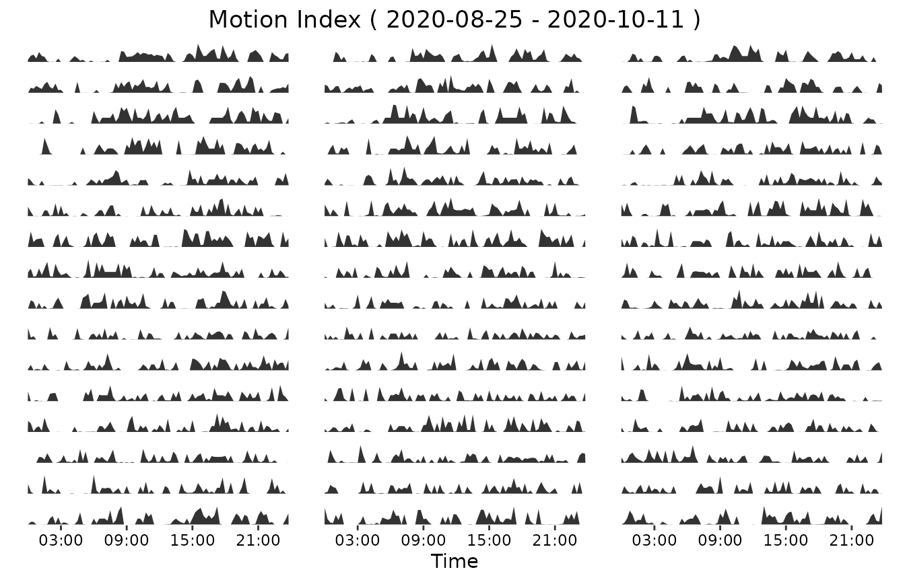

Further options of visualization in DigiRhythm
Hassan-Roland Nasser and Marie Schneider
2024-12-19
Visualisation.RmdDigiRhythm additionally contains some deeper visualization possibilities. - the function daily_activity_wrap_plot could be used to visualize the activity over time per day - the function plot_quadro is a possibility to combine different forms of visualizing activity (actogram, average activity, DFC and HP and daily activity) - the function plot_actogram_avg_activity will show what happens, if Hassan wrote the code
First, we start by loading a dataset, removing the outliers, resample it to 15 min and choose the activity to study.
library(digiRhythm)
#> Error in get(paste0(generic, ".", class), envir = get_method_env()) :
#> object 'type_sum.accel' not found
data <- digiRhythm::df691b_1
data <- remove_activity_outliers(data)
data <- resample_dgm(data, 15)
activity <- names(data)[2]
head(data)
#> datetime Motion.Index Steps
#> 1 2020-08-25 00:00:00 20 8
#> 2 2020-08-25 00:15:00 52 46
#> 3 2020-08-25 00:30:00 61 39
#> 4 2020-08-25 00:45:00 29 18
#> 5 2020-08-25 01:00:00 83 26
#> 6 2020-08-25 01:15:00 50 23Daily Activity Wrap
Now we proceed to plot the daily activity. User can decide to plot the activity during the time of one day. Or to plot a huge plot including a number of day-plots. User has to define the activity to plot. Additionally, user has to define the activity_alias, similar to the actogram. Start and end date have to be defined by the user, using the format “%Y-%m-%d”. Afterwards, sampling_rate of the data has to be defined. The sample size has to be bigger or equal to the sample size of the dataset. With “n_cols”, the user is able to decide how many graphs/days should be shown in a row of the plot. User has the possibility to save the plot directly, using this function.
activity_alias <- "Motion Index"
start <- "2020-08-25" # year-month-day
end <- "2020-10-11" # year-month-day
sampling_rate <- 15
ncols <- 3 # number of columns
# save <- 'sample_results/daily_wrap_plot' #if Null, doesn't save the image
my_daily_wrap_plot <- daily_activity_wrap_plot(data, activity,
activity_alias,
start,
end,
sampling_rate,
ncols,
save = Null
)